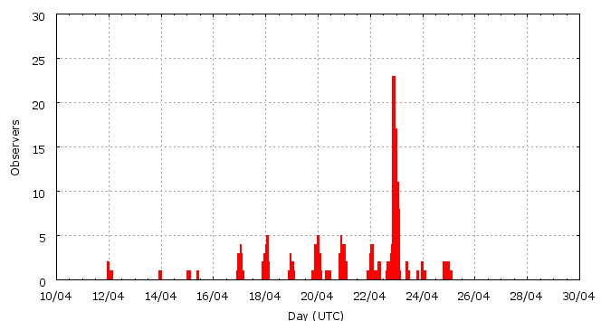

[ www.imo.net ]
This page shows automated results of the Lyrids 2010, based on visual observations by volunteers astronomers collected through the report form of the International Meteor Organization (IMO). The information on this page is generated automatically; for scientific use please refer to manual analyses published in scientific journals (such as WGN). Send your feedback regarding this page to Geert Barentsen.
Page contents:
Page generated: 2010 July 21 at 11:40 UTC.
The graph below shows the ZHR (Zenithal Hourly Rate), which is the number of meteors an observer would see under a very dark sky with the radiant of the shower in zenith.
ZHRmax = 20 based on 476 Lyrids reported in 194 intervals, assuming population index r = 2.1

| Time (UTC) | Solarlon | nINT | nLYR | ZHR | Particle density | |
|---|---|---|---|---|---|---|
| 2010-04-12 01:02 | 21.881 | 5 | 3 | 1 | ±0 | 1 / 109·km3 |
| 2010-04-13 23:05 | 23.762 | 1 | 2 | 3 | ±2 | 4 / 109·km3 |
| 2010-04-15 04:33 | 24.965 | 3 | 3 | 2 | ±1 | 3 / 109·km3 |
| 2010-04-17 05:57 | 26.981 | 13 | 16 | 2 | ±0 | 3 / 109·km3 |
| 2010-04-18 03:41 | 27.866 | 18 | 21 | 2 | ±0 | 3 / 109·km3 |
| 2010-04-19 14:57 | 29.303 | 12 | 14 | 3 | ±1 | 4 / 109·km3 |
| 2010-04-20 12:02 | 30.160 | 19 | 31 | 3 | ±1 | 4 / 109·km3 |
| 2010-04-21 03:24 | 30.785 | 9 | 30 | 7 | ±1 | 10 / 109·km3 |
| 2010-04-22 01:03 | 31.666 | 10 | 32 | 10 | ±2 | 14 / 109·km3 |
| 2010-04-22 03:43 | 31.774 | 8 | 30 | 11 | ±2 | 16 / 109·km3 |
| 2010-04-22 17:18 | 32.326 | 11 | 33 | 19 | ±3 | 27 / 109·km3 |
| 2010-04-22 21:20 | 32.490 | 10 | 30 | 20 | ±4 | 29 / 109·km3 |
| 2010-04-22 22:45 | 32.548 | 12 | 30 | 12 | ±2 | 17 / 109·km3 |
| 2010-04-23 00:01 | 32.599 | 10 | 33 | 11 | ±2 | 16 / 109·km3 |
| 2010-04-23 01:03 | 32.641 | 14 | 66 | 14 | ±2 | 20 / 109·km3 |
| 2010-04-23 02:01 | 32.680 | 16 | 63 | 12 | ±2 | 17 / 109·km3 |
| 2010-04-23 12:53 | 33.121 | 10 | 27 | 10 | ±2 | 14 / 109·km3 |
| 2010-04-24 23:45 | 34.537 | 13 | 12 | 4 | ±1 | 6 / 109·km3 |
The reported intervals are automatically added together into the bins shown above, based on the number of meteors and the distribution of the intervals. For each bin, the following parameters are computed:
Data has been received from 47 observers in 16 countries. Thank you for your efforts!
Note: click on the map for an interactive version.

| Observer | Country | Teff | nLYR |
|---|---|---|---|
| Moein Adnani | Iran | 0.50h | 5 |
| Salvador Aguirre | Mexico | 3.00h | 8 |
| Pierre Bader | Germany | 14.30h | 56 |
| Rafael G. Barrios B. | Venezuela | 0.92h | 5 |
| Dominika D?bek | Poland | 0.98h | 3 |
| Sietse Dijkstra | Netherlands | 3.42h | 14 |
| Dariusz Dorosz | Poland | 1.50h | 2 |
| Urszula Dzikowicz | Poland | 1.97h | 6 |
| Vilem Heblik | Czech Republic | 7.00h | 26 |
| Ken Hodonsky | United States | 1.98h | 16 |
| Carl Johannink | Netherlands | 1.53h | 11 |
| Angelika Ju?kiewicz | Poland | 0.98h | 2 |
| Jozef Karlik | Slovakia | 3h | 2 |
| Paulina Kawecka | Poland | 0.98h | 4 |
| Yann Kempf | France | 1.35h | 4 |
| Weronika Kokoszka | Poland | 0.98h | 3 |
| Zdenek Komarek | Slovakia | 6h | 13 |
| Slavomir Kosican | Slovakia | 3h | 2 |
| Jakub Koukal | Czech Republic | 21.00h | 64 |
| Aleksandra Lechowicz | Poland | 0.98h | 1 |
| Anna S. Levina | Israel | 1.50h | 6 |
| Yanzhe Liu | United States | 2.25h | 8 |
| Xin Li | China | 0.99h | 9 |
| Qiang Ma | China | 1.00h | 8 |
| Grigoris Maravelias | Greece | 2.89h | 8 |
| Artur Mencel | Poland | 0.98h | 4 |
| Katarzyna Mielczarek | Poland | 1.97h | 2 |
| Magdalena Mi?ek | Poland | 0.98h | 3 |
| Koen Miskotte | Netherlands | 14.69h | 36 |
| Sirko Molau | Germany | 1.17h | 8 |
| Karolina Paprocka | Poland | 1.97h | 3 |
| Krzysztof Patela | Poland | 0.98h | 4 |
| Dominika P?czek | Poland | 2.95h | 8 |
| Kinga Piasecka | Poland | 0.98h | 3 |
| Jurgen Rendtel | Germany | 14.48h | 46 |
| Branislav Savic | Serbia | 2.77h | 12 |
| Ivan M. Sergey | Belarus | 2.16h | 3 |
| Dariusz Sitek | Poland | 2.95h | 6 |
| Natalia Smus | Poland | 1.97h | 3 |
| Jiri Srba | Czech Republic | 4.00h | 2 |
| Pavel Svozil | Czech Republic | 1.50h | 5 |
| Richard Taibi | United States | 1.43h | 1 |
| Hendrik Vandenbruaene | Belgium | 1.17h | 5 |
| Michel Vandeputte | Belgium | 15.60h | 64 |
| Valentin Velkov | Bulgaria | 3.70h | 24 |
| Romana Vujasinovic | Serbia | 1.87h | 4 |
| Xiaofan Wei | China | 1.92h | 15 |
Create your own analysis. The files below can be opened using Excel:
lyr2010_rate.csv (number of meteors per interval per observer)
lyr2010_magn.csv (number of meteors per magnitude bin per observer)
The information on this page may be distributed freely provided credit is given to the International Meteor Organization (IMO) and, when possible, to the individual observers. The computer facilities to generate this page are provided by the Urania Public Observatory in Belgium and Armagh Observatory in Northern Ireland.
References: